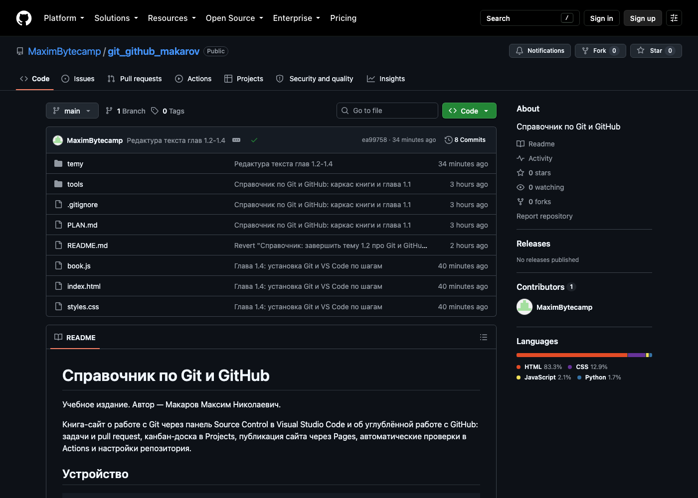

Справочник по Git и GitHub · модуль 1 · что такое контроль версий
Глава 1.2
Git и GitHub:
кто что делает
Git — программа на вашем компьютере, GitHub — сайт, на котором хранят копию репозитория. В главе разобрано, что делает каждый из них, что работает без интернета и чем можно заменить GitHub.
- Категория
- История и основные понятия
- Уровень
- Начальный
- Связанные темы
- Откуда взялся Git, удалённые репозитории
- Зачем это знать
- Понимать, где выполняется каждое действие и что от чего зависит
§1Откуда берётся путаница
«Залил работу на гит», «скачай с гита», «у меня гит не открывается» — во всех трёх фразах речь про сайт GitHub, а названа программа Git. Знакомство обычно начинается с сайта: человек регистрируется на GitHub, создаёт репозиторий, получает ссылку и называет всё это словом «гит».
Разница видна в трёх случаях. Без интернета работать с Git можно, а с GitHub нельзя. Если удалить репозиторий на сайте, история на диске останется. Без входа в аккаунт коммиты всё равно создаются.


§2Git: программа на вашем компьютере
Git устанавливается как обычная программа и запускается локально. Он следит за одной папкой — той, в которой вы создали репозиторий, — и хранит её историю в скрытом каталоге .git внутри этой же папки.
Git делает у вас на диске:
- записывает коммиты — сохранённые состояния проекта с автором, датой и пояснением;
- показывает, какие строки изменились с прошлого коммита;
- создаёт ветки и объединяет их, в том числе с разбором конфликтов;
- возвращает файлы к любому сохранённому состоянию;
- ищет, в каком коммите появилась конкретная строка.
Ассоциация: черновик и чистовик
Вы правите текст в черновике, а в чистовик переносите только то, что считаете готовым. Перенесённое датируется и больше не меняется — если нужна правка, делается следующая запись.
Черновик — файлы в папке проекта, их можно править как угодно. Коммит — перенос в чистовик: состояние получает автора, дату и пояснение и остаётся в истории.
Где не совпадаетЧистовик один и растёт вперёд. В Git чистовиков может быть несколько параллельных — это ветки, и любую из них можно потом слить с остальными.
Для всего перечисленного не нужны ни интернет, ни аккаунт, ни регистрация. Для Git GitHub — это адрес, по которому лежит ещё одна копия репозитория.
Если включить показ скрытых файлов, в папке проекта виден каталог .git. В нём хранятся все коммиты. При копировании папки проекта вместе с .git переносится вся история. Если удалить .git, останутся только текущие файлы без прошлых версий.
§3GitHub: сайт с копией репозитория
GitHub — веб-сервис, принадлежащий Microsoft. Он хранит копию вашего репозитория на своих серверах и отдаёт её по запросу. Остальные возможности добавлены сервисом, в Git их нет.
Что добавляет сервис:
- страницу проекта, где код виден в браузере, без установки программ;
- задачи (Issues) с метками, исполнителями и обсуждением;
- pull request — предложение внести изменения, с ревью и замечаниями к конкретным строкам;
- права доступа: кто может читать, кто писать, кто менять настройки;
- канбан-доски в Projects, автоматические проверки в Actions, публикацию сайта через Pages.
В Git этих возможностей нет. Pull request, метки и доски относятся к сервису и на работу Git не влияют.
§4Кто что делает: таблица
Где выполняется каждое действие:
Строка «отправить коммиты» отмечена в обеих колонках: команду выполняет Git, а принимает и сохраняет её сервис. В этом действии участвуют оба.
§5Как они соединяются
Где всё это лежит
Проект существует в двух местах. Первое — папка проекта на диске. В ней лежат ваши файлы и скрытая папка .git: её создаёт команда git init, в ней хранится вся история.
Папка проекта на диске · показаны скрытые файлы
Точка в начале имени означает, что папка скрытая: в проводнике и в Finder её не видно, пока не включён показ скрытых файлов. Содержимое .git разобрано в третьем модуле.
Это проверяется командой в терминале: она показывает содержимое папки вместе со скрытым:
ls -a
. .. .git README.md privet.txt
Второе место — тот же проект на GitHub. Файлы те же, папки .git в списке нет — сервис хранит историю у себя и показывает её вкладками сверху.

index.html, styles.css, папка temy. Папки .git здесь нет: её содержимое сервис разобрал и показывает как историю, ветки и вкладку Commits.В настройках репозитория Git хранит список удалённых репозиториев — адреса копий, с которыми вы обмениваетесь коммитами. У первого такого адреса принято имя origin; это короткое имя, которое заменяет ссылку.
push отправляет накопленные коммиты в копию на сервисе, pull забирает оттуда чужие. В VS Code обе операции выполняет кнопка Sync Changes в панели Source Control.Ассоциация: общий доклад и своя папка
Вы пишете свою часть доклада у себя на компьютере и правите её сколько угодно — группа этого не видит. Когда часть готова, вы кладёте её в общую папку. Там же появляются части других людей, и вы забираете их себе, чтобы собрать доклад целиком.
Пока файл не положен в общую папку, остальные его не видят.
Правки и коммиты — работа у себя. push кладёт накопленные коммиты в общую копию на GitHub, pull забирает оттуда чужие. В VS Code обе операции выполняет кнопка Sync Changes.
Пока не выполнен push, остальные ваших коммитов не видят.
Где не совпадаетВ общей папке новый файл затирает старый. Git ничего не затирает: он добавляет ваши коммиты к чужим и, если двое правили одну строку, останавливается и спрашивает, какой вариант оставить.
Пока не нажата кнопка Sync, новых коммитов на GitHub нет. Они лежат только на вашем диске, и при отказе диска восстановить их неоткуда.
Зачем различать это в работе
- Понимать, где искать поломку. «Не отправляется» и «не коммитится» — разные неисправности: первая про сеть, доступ и аккаунт, вторая про Git на компьютере. От этого зависит, что проверять: сеть или настройки Git.
- Не терять работу. Коммит хранит состояние на диске, отправка — переносит его на сервер. Пока не нажата кнопка Sync, резервной копии нет: при отказе диска теряется всё, что сделано после последней отправки.
- Менять место хранения без переделок. Компания переезжает с GitHub на GitLab или на свой сервер — код и история переносятся как есть. Переделывать придётся только то, что принадлежит сервису: задачи, доски, права доступа.
- Работать там, где нет сети. В поезде, на площадке заказчика, без интернета работа продолжается: коммиты копятся локально и уходят на сервер одной кнопкой, когда связь появится.
На собеседованиях вопрос «чем Git отличается от GitHub» задают, чтобы проверить понимание этого различия.
§6Что работает без интернета
Что работает без сети:
Отсюда порядок работы: коммиты делают по ходу работы, отправляют их, когда есть сеть.
§7Откуда взялся GitHub
Git появился в 2005 году, а сервис вокруг него — через три года. Он избавил от настройки собственного сервера для публикации репозитория.
Крис Ванстрат, Том Престон-Вернер и Пи Джей Хайетт делают сайт, где репозиторий Git размещается без настройки сервера. Сервис ввёл pull request — способ предложить чужому проекту правку и обсудить её.
Появляется GitHub Pages: страницы проекта публикуются из той же ветки, где лежит код. Так опубликован этот справочник.
Microsoft покупает GitHub. Руководителем становится Нат Фридман. Бесплатные приватные репозитории, которые раньше стоили денег, открывают для всех.
GitHub Actions запускает сборку и тесты при каждом изменении. Отдельный сервер для этого больше не нужен; подробности — в седьмом модуле.
По данным самого сервиса, на нём зарегистрировано свыше ста миллионов разработчиков. GitHub — крупнейшая из таких площадок.
Крис Ванстрат
Один из основателей GitHub и его руководитель до 2018 года. Сервис начинался как побочный проект нескольких программистов, которые не хотели настраивать серверы для репозиториев.
Фото: Dave Fayram, CC BY 2.0 · Wikimedia Commons
Том Престон-Вернер
Придумал название и участвовал в запуске сервиса в 2008 году. Он же автор генератора сайтов Jekyll, на котором долго работал GitHub Pages.
Фото: Tim Bray, CC BY-SA 3.0 · Wikimedia Commons
GitHub — коммерческий продукт конкретной компании. Компания может менять правила, тарифы и внешний вид сервиса. На Git и на репозиторий на вашем диске это не влияет.
§8Другие сервисы для репозиториев
Репозиторий размещают и на других сервисах. Все они работают с Git: команды одинаковые, меняется только адрес.
 GitHub · Microsoft
GitHub · Microsoft Bitbucket · Atlassian
Bitbucket · AtlassianЛоготипы: GitHub — MIT; GitLab — MIT; Bitbucket — Atlassian, общественное достояние; Gitea — MIT; Codeberg — CC0. Источник — Wikimedia Commons.
Сервис не обязателен. Общей копией может быть папка на сетевом диске, репозиторий на арендованном сервере или флешка — Git умеет обмениваться коммитами и так. Поэтому говорят «репозиторий размещён на GitHub».
На нём лежит большинство открытых проектов, он бесплатен для небольших проектов, поддерживается Visual Studio Code без настройки и даёт всё, что нужно курсу: задачи, pull request, доски и публикацию сайта. На других сервисах команды Git те же.
§9Разбор привычных фраз
Что стоит за привычными фразами и как сказать точнее:
«Залил работу на гит»
«Скачай проект с гита»
«У меня гит не открывается»
«Сохрани на гитхаб, чтобы не потерялось»
§10Частые заблуждения
.git. Проект можно разместить заново на GitHub или в другом месте.§11Проверьте себя
Интернет пропал на весь день. Что из работы с репозиторием останется доступным?
Всё, кроме обмена с сервисом: коммиты, просмотр истории, ветки, слияния, откаты к прошлым состояниям. Не сработают отправка коммитов, получение чужих изменений, клонирование нового проекта и любые действия на сайте — задачи, pull request, доски.
Что такое origin?
Имя удалённого репозитория — короткая замена его адресу. По традиции так называют первую удалённую копию, обычно ту, что на GitHub. Имя можно поменять, и удалённых копий может быть несколько.
Вы весь вечер делали коммиты, но не нажимали Sync. Что видно на GitHub?
Состояние на момент последней отправки. Коммиты вечера лежат только на вашем компьютере: пока не выполнен push, сервис о них не знает.
Чем pull request отличается от слияния веток в Git?
Слияние — операция Git: она объединяет две ветки на вашем компьютере. Pull request — страница на сервисе, где предложенное изменение обсуждают, просматривают построчно и одобряют, а слияние выполняется уже после этого. Без сервиса можно слить ветки, но нельзя обсудить правку в таком виде.
Верно ли, что перенос проекта с GitHub на GitLab требует всё переделывать?
Нет. Оба сервиса работают с одним и тем же Git: нужно добавить второй адрес удалённого репозитория и отправить туда коммиты. Переносить придётся не код, а то, что принадлежит сервису: задачи, доски, настройки доступа.
Объясните своими словами, почему фраза «программа написана на GitHub» неверна.
GitHub — место хранения репозитория и площадка для совместной работы. Программа написана на языке программирования в редакторе, а её история хранится в Git; GitHub держит копию этой истории и даёт к ней доступ другим людям.
§12Шпаргалка по главе
программа на компьютере
коммиты, ветки, история
работает без сети
сайт с копией репозитория
задачи, PR, доски, Pages
нужен интернет и аккаунт
origin — имя удалённой копии
push — отправить коммиты
pull — забрать чужие
«отправил коммиты на GitHub»
«склонировал репозиторий»
Итог главы
Git и GitHub — разные вещи с похожими названиями. Git хранит историю проекта на вашем диске и выполняет все операции с ней локально. GitHub хранит копию этой истории на своих серверах и добавляет то, чего в Git нет: задачи, pull request, права доступа, доски и публикацию сайта. Соединяет их список удалённых репозиториев: push отправляет коммиты в копию, pull забирает чужие. Сервис можно заменить другим, Git у всех таких площадок один. Следующая глава — установка Git и VS Code.
- История и возможности сервиса — статья «GitHub» в Википедии.
- Покупка компанией Microsoft за 7,5 млрд долларов, 2018 год — официальное сообщение Microsoft.
- Число пользователей сервиса — годовой отчёт GitHub Octoverse.
- Удалённые репозитории,
pushиpull— раздел «Работа с удалёнными репозиториями» книги Pro Git. - Все изображения — Wikimedia Commons, лицензии указаны под каждым.